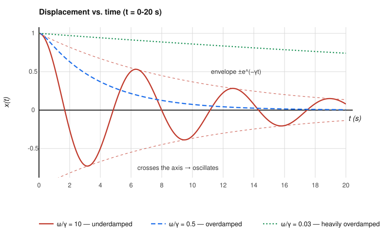
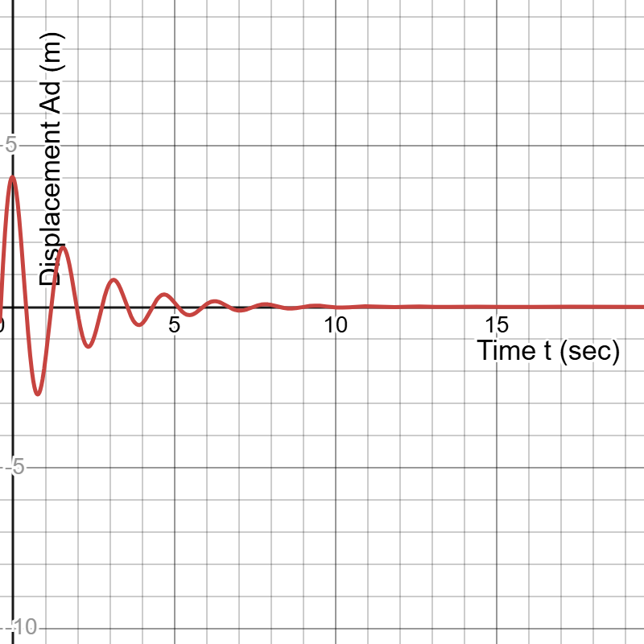
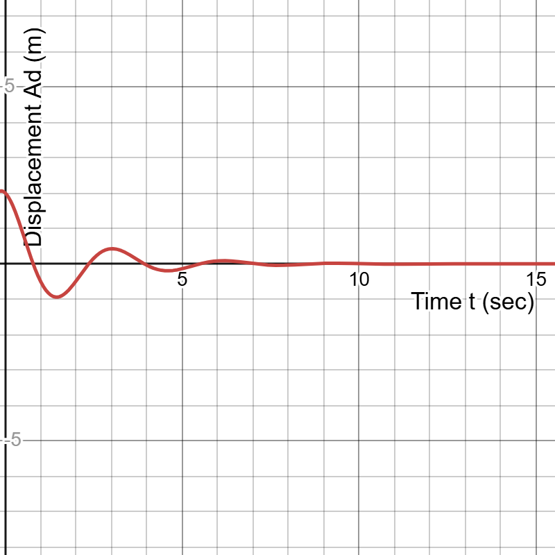
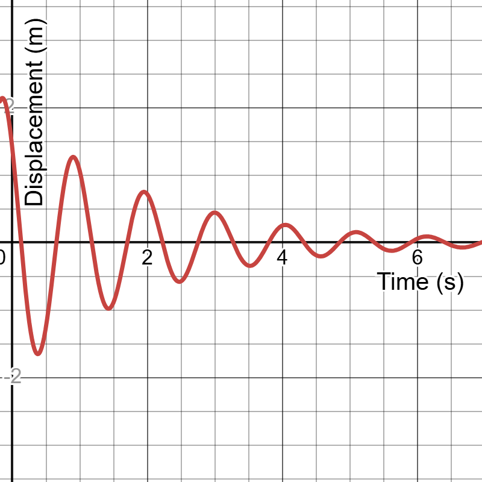
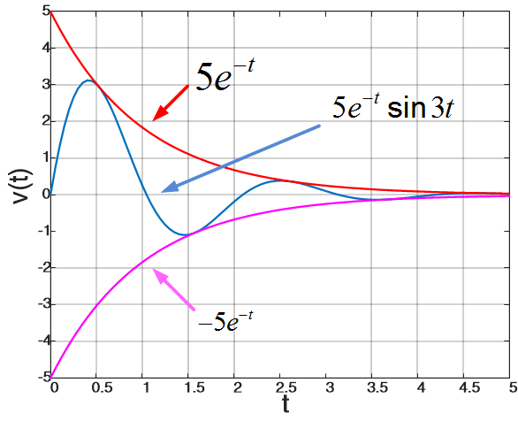
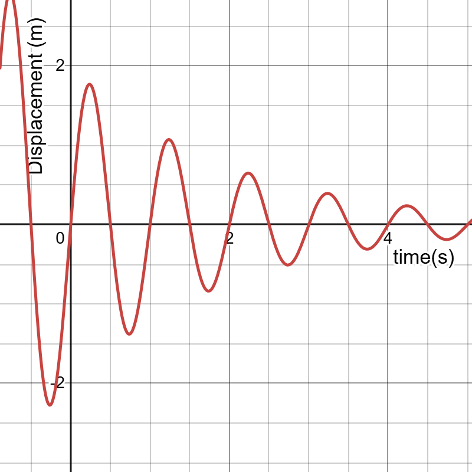
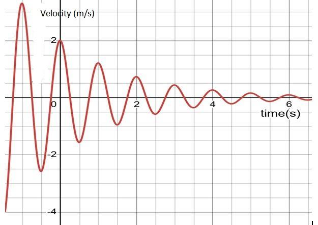
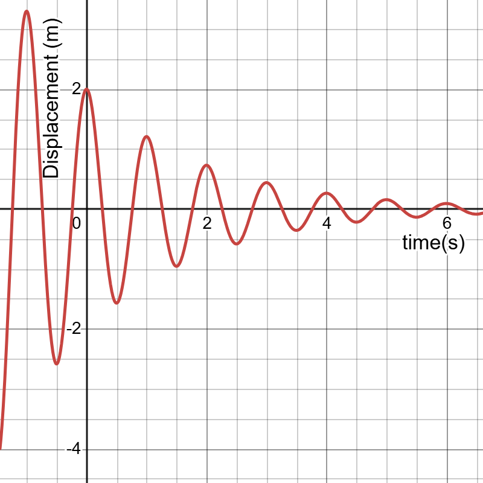

🎯 Quiz-2 Solved Problems
SECTION 1: Quiz 2 Problems
Example 1 Math
Problem: Read the relevant sections in the textbook … the course notes will guide you.
📝 Show Solution
Solution:
This is a general guideline, no mathematical solution is required.
\( \text{Read textbook} \)
Example 3 Math
Problem: Get help early … from Course Teacher.
📝 Show Solution
Solution:
This is a general guideline, no mathematical solution is required.
\( \text{Get help early} \)
Example 5 Math
Problem: Read the relevant sections in the textbook … the course notes will guide you.
📝 Show Solution
Solution:
This is a general guideline, no mathematical solution is required.
\( \text{Read textbook} \)
Example 6 Math
Problem: Do all homework and problem sets.
📝 Show Solution
Solution:
This is a general guideline, no mathematical solution is required.
\( \text{Do homework} \)
Example 12 Math
Problem: A mobile phone tower transmits a wave signal of frequency 900 MHz. Calculate the length of the waves transmitted from the mobile phone tower.
📝 Show Solution
Solution:
Given, frequency \( f = 900 \text{ MHz} = 900 \times 10^6 \text{ Hz} \).
Speed of electromagnetic wave \( c = 3 \times 10^8 \text{ m/s} \).
Formula: \( \lambda = \frac{c}{f} \)
Substitution: \( \lambda = \frac{3 \times 10^8}{900 \times 10^6} \)
Result: \( \lambda = \frac{1}{3} \approx 0.333 \text{ m} \)
Example 14 Math
Problem: A wave from SHM of amplitude +8units travels a line of particles in the direction of positive X axis. At any instant for a particle at a distance of 10 cm from the origin, the displacement is +6 units and at a distance a particle from the origin is 25 cm, the displacement is +4units. Calculate the wavelength.
📝 Show Solution
Solution:
Given amplitude \( A = 8 \).
At \( x_1 = 10 \text{ cm} \), \( y_1 = 6 \). Formula: \( y = A \sin(\phi - kx) \).
\( 6 = 8 \sin(\phi - 10k) \implies \phi - 10k = \sin^{-1}(0.75) \approx 0.848 \text{ rad} \).
At \( x_2 = 25 \text{ cm} \), \( y_2 = 4 \).
\( 4 = 8 \sin(\phi - 25k) \implies \phi - 25k = \sin^{-1}(0.5) = \frac{\pi}{6} \approx 0.5236 \text{ rad} \).
Subtracting the two equations: \( 15k = 0.848 - 0.5236 = 0.3244 \).
\( k = 0.0216 \text{ rad/cm} \).
Wavelength \( \lambda = \frac{2\pi}{k} = \frac{2\pi}{0.0216} \approx 290.5 \text{ cm} \).
Example 15 Math
Problem: Draw displacement vs. time graph of a DHM for / = 10, / = 0.5, and / = 0.03.
📝 Show Solution
Solution:
A damped harmonic oscillator is governed by \( \frac{d^2x}{dt^2} + 2\gamma \frac{dx}{dt} + \omega_0^2 x = 0 \).
1) For \( \omega / \gamma = 10 \): Underdamped, many oscillations before decaying.
2) For \( \omega / \gamma = 0.5 \): Overdamped, no oscillations, slow decay.
3) For \( \omega / \gamma = 0.03 \): Strongly overdamped.
\[ x(t) = A e^{-\gamma t} \cos(\omega t + \phi) \] (for underdamped case)
Example 16 Math
Problem: A block of mass 1 kg attached to a spring is made to oscillate with an initial amplitude of 12 cm. After 2 minutes the amplitude decreases to 6 cm. Determine the value of the damping constant for this motion.
📝 Show Solution
Solution:
Given \( m = 1 \text{ kg} \), initial amplitude \( A_0 = 12 \text{ cm} \).
At \( t = 2 \text{ minutes} = 120 \text{ s} \), \( A(t) = 6 \text{ cm} \).
Formula: \( A(t) = A_0 e^{-\frac{bt}{2m}} \)
Substitution: \( 6 = 12 e^{-\frac{b(120)}{2(1)}} \)
\( e^{60b} = 2 \implies 60b = \ln(2) \)
\( b = \frac{\ln(2)}{60} \approx 0.01155 \text{ kg/s} \).
Example 17 Math
Problem: For a damped oscillator m = 200 gm, k = 80 N/m and b = 65 gm/s. (i) What is the period of the motion? (ii) Which type of oscillation it is? (iii) How long does it take for the amplitude of the damped oscillations to drop to half its initial value? (iv) How many oscillations does it complete in life time? (v) How long does it take for the mechanical energy to drop to one-half its initial value? (vi) What is its life time or relaxation time? (vii) The maximum displacement of an undamped oscillator is 35 cm. If the damping is stopped after 20 cycles, What is the damping energy? What is the (viii) ratio of the oscillation amplitude to the initial oscillation amplitude at this cycle? (ix) damping angular frequency? (x) damping frequency? (xi) damping amplitude? (xii) damping energy at t=3.5s? (xiii) damping amplitude at t=3 s? (xiv) displacement equation? (xv) damping displacement at t=4 sec? (xvi) damping period? (xvii) natural frequency? (xviii) damping factor? (xix) displacement of the particle after 2 cycle? (xx) damping force if v=6 m/s? and (xxi) what is the critical damping co-efficient?
📝 Show Solution
Solution:
Given \( m = 0.2 \text{ kg} \), \( k = 80 \text{ N/m} \), \( b = 0.065 \text{ kg/s} \).
\( \omega_0 = \sqrt{\frac{k}{m}} = \sqrt{\frac{80}{0.2}} = 20 \text{ rad/s} \).
\( \gamma = \frac{b}{2m} = \frac{0.065}{0.4} = 0.1625 \text{ s}^{-1} \).
Since \( \gamma < \omega_0 \), this is underdamped oscillation.
\( \omega = \sqrt{\omega_0^2 - \gamma^2} = \sqrt{400 - 0.0264} \approx 20 \text{ rad/s} \).
Period \( T = \frac{2\pi}{\omega} \approx 0.314 \text{ s} \).
Time to drop amplitude to half: \( t = \frac{\ln(2)}{\gamma} = \frac{0.693}{0.1625} \approx 4.26 \text{ s} \).
Example 18 Math
Problem: The displacement of a particle with mass 500 gm following DHM is What is the (i) damping constant? (ii) damping frequency? (iii) natural frequency? (iv) damping displacement at t=2 sec? (v) damping energy at t=5 sec? and (vi) resonance frequency?
📝 Show Solution
Solution:
Assuming generic DHM equations, for mass \( m = 0.5 \text{ kg} \).
Formulas: \( \gamma = \frac{b}{2m} \), \( \omega = \sqrt{\omega_0^2 - \gamma^2} \).
Resonance frequency: \( \omega_r = \sqrt{\omega_0^2 - 2\gamma^2} \).
\[ x(t) = A_0 e^{-\gamma t} \cos(\omega t + \phi) \]
Example 19 Math
Problem: Draw the DHM for displacement vs time graph : up to 2 cycles. 12. If the amplitude of a damped oscillator becomes 1/27th of its initial value after 6 minutes, what was the amplitude after 2 minutes?
📝 Show Solution
Solution:
Amplitude relation: \( A(t) = A_0 e^{-\gamma t} \).
After 6 minutes: \( A(6) = A_0 e^{-6\gamma} = \frac{1}{27} A_0 \implies e^{-6\gamma} = 3^{-3} \implies e^{-2\gamma} = 3^{-1} = \frac{1}{3} \).
After 2 minutes: \( A(2) = A_0 e^{-2\gamma} = A_0 \left( \frac{1}{3} \right) = \frac{A_0}{3} \).
Result: The amplitude was \( \frac{1}{3} \) of its initial value.
Example 20 Math
Problem: In oscillatory circuit L= 0.4 h, C = 0.0020 μF. (i) What is the maximum value of resistance (R) for the circuit to be oscillatory? and (ii) What is its resonant frequency?
📝 Show Solution
Solution:
Given \( L = 0.4 \text{ H} \), \( C = 0.0020 \mu\text{F} = 2 \times 10^{-9} \text{ F} \).
For oscillatory motion, \( R < 2\sqrt{\frac{L}{C}} \).
Max \( R = 2\sqrt{\frac{0.4}{2 \times 10^{-9}}} = 2\sqrt{2 \times 10^8} = 28284 \Omega \).
Resonant frequency: \( f = \frac{1}{2\pi\sqrt{LC}} = \frac{1}{2\pi\sqrt{0.4 \times 2 \times 10^{-9}}} \approx 5627 \text{ Hz} \).
Example 21 Math
Problem: Find whether the discharge of capacitor through the following inductive series circuit is oscillatory or not. Given, C = 0.1µF, L = 10mh, and R 200 Ω. (i) If oscillatory, find the frequency of oscillation and resonant frequency. (ii) If it is parallel circuit, then find out the similar characteristics of that circuit, and (iii) If 200 Ω is removed from the circuit, then what will be the resistance required for getting a critical damping Cd?
📝 Show Solution
Solution:
Given \( C = 0.1 \mu\text{F} = 10^{-7} \text{ F} \), \( L = 10 \text{ mH} = 0.01 \text{ H} \), \( R = 200 \Omega \).
Critical damping \( R_c = 2\sqrt{\frac{L}{C}} = 2\sqrt{\frac{0.01}{10^{-7}}} = 2\sqrt{10^5} \approx 632.4 \Omega \).
Since \( R = 200 \Omega < R_c \), the circuit is oscillatory (underdamped).
\( \omega_0 = \frac{1}{\sqrt{LC}} = \frac{1}{\sqrt{10^{-9}}} = 31622 \text{ rad/s} \).
\( \gamma = \frac{R}{2L} = \frac{200}{0.02} = 10000 \text{ s}^{-1} \).
\( \omega = \sqrt{\omega_0^2 - \gamma^2} = \sqrt{10^9 - 10^8} = 30000 \text{ rad/s} \).
Frequency \( f = \frac{\omega}{2\pi} \approx 4775 \text{ Hz} \).
Example 22 Math
Problem: Find whether the discharge of capacitor through the following inductive series circuit is oscillatory or not? Given, C = 0.2 nF, L = 10 mH, and R = 300 Ω. If oscillatory, find the frequency of oscillation and resonant frequency. If it is parallel circuit, then find out the similar characteristics of that circuit.
📝 Show Solution
Series Circuit:
Given: \(C = 0.2 \times 10^{-9} \text{ F}, L = 10 \times 10^{-3} \text{ H}, R = 300 \, \Omega\)
Condition for oscillatory discharge in series RLC: \(R < 2\sqrt{\frac{L}{C}}\)
Calculate critical resistance: \(2\sqrt{\frac{L}{C}} = 2\sqrt{\frac{10 \times 10^{-3}}{0.2 \times 10^{-9}}} = 2\sqrt{5 \times 10^7} = 14142.1 \, \Omega\)
Since \(300 \, \Omega < 14142.1 \, \Omega\), the circuit is oscillatory.
Resonant frequency: \(f_0 = \frac{1}{2\pi\sqrt{LC}} = \frac{1}{2\pi\sqrt{2 \times 10^{-12}}} = 112.54 \text{ kHz}\)
Frequency of oscillation: \(f = \frac{1}{2\pi}\sqrt{\frac{1}{LC} - \left(\frac{R}{2L}\right)^2} = \frac{1}{2\pi}\sqrt{5 \times 10^{11} - 2.25 \times 10^8} = 112.51 \text{ kHz}\)
Parallel Circuit:
Condition for oscillatory discharge: \(R > \frac{1}{2}\sqrt{\frac{L}{C}} \implies R > 3535.5 \, \Omega\)
Since \(300 \, \Omega < 3535.5 \, \Omega\), the parallel circuit is non-oscillatory (overdamped).
Example 23 Math
Problem: Find whether the discharge of capacitor through the following inductive series circuit is oscillatory or not. Given, C = 1µF, L = 10mh, and R=400 Ω. (i) If oscillatory, find the frequency of oscillation and resonant frequency, (iii) If 400 Ω is removed from the circuit, then what will be the resistance required for getting a critical damping Cd? (iv) What will be the critical resistance for parallel circuit?
📝 Show Solution
(i) Oscillatory Check & Frequencies:
Given: \(C = 1 \mu\text{F} = 10^{-6}\text{ F}, L = 10 \text{ mH} = 0.01\text{ H}, R = 400 \, \Omega\)
Critical resistance for series: \(R_c = 2\sqrt{\frac{L}{C}} = 2\sqrt{\frac{0.01}{10^{-6}}} = 200 \, \Omega\)
Since \(R = 400 \, \Omega > R_c = 200 \, \Omega\), the series circuit is non-oscillatory (overdamped).
Resonant frequency: \(f_0 = \frac{1}{2\pi\sqrt{LC}} = \frac{1}{2\pi\sqrt{10^{-8}}} = 1591.5 \text{ Hz}\)
Since it is non-oscillatory, there is no frequency of oscillation.
(iii) Critical Damping Resistance (Series):
If the original resistor is removed, the required resistance for critical damping is \(R_c = 2\sqrt{\frac{L}{C}} = 200 \, \Omega\).
(iv) Critical Resistance for Parallel Circuit:
For a parallel RLC circuit, critical damping occurs when \(R_c = \frac{1}{2}\sqrt{\frac{L}{C}} = \frac{1}{2}(100) = 50 \, \Omega\).
Example 24 Math
Problem: Find whether the discharge of capacitor through the following inductive circuit is oscillatory or not. Given, C = 0.1µF, L = 10mh, and R=200 Ω. (i) If Oscillatory, find the frequency of oscillation. (ii) Also find out the resonance frequency. (iii) What is the displacement equation for this parameters? (iv) What is its displacement at t=2 ms?
📝 Show Solution
(i) & (ii) Oscillatory Check & Frequencies:
Given: \(C = 0.1 \mu\text{F} = 10^{-7}\text{ F}, L = 10 \text{ mH} = 0.01\text{ H}, R = 200 \, \Omega\)
Critical resistance \(R_c = 2\sqrt{\frac{L}{C}} = 2\sqrt{\frac{0.01}{10^{-7}}} = 2\sqrt{10^5} = 632.45 \, \Omega\)
Since \(200 \, \Omega < 632.45 \, \Omega\), it is oscillatory.
Resonant frequency: \(f_0 = \frac{1}{2\pi\sqrt{LC}} = \frac{1}{2\pi\sqrt{10^{-9}}} = 5032.9 \text{ Hz}\)
Frequency of oscillation: \(f_d = \frac{1}{2\pi}\sqrt{\frac{1}{LC} - \left(\frac{R}{2L}\right)^2} = \frac{1}{2\pi}\sqrt{10^9 - 10^8} = 4774.6 \text{ Hz}\)
(iii) Displacement (Charge) Equation:
\(q(t) = Q_0 e^{-\alpha t} \cos(\omega_d t + \phi)\), where \(\alpha = \frac{R}{2L} = 10^4 \text{ s}^{-1}\) and \(\omega_d = 30000 \text{ rad/s}\).
Assuming initial maximum charge \(Q_0\) and \(\phi = 0\): \(q(t) = Q_0 e^{-10000 t} \cos(30000 t)\)
(iv) Displacement at \(t = 2 \text{ ms}\):
\(q(0.002) = Q_0 e^{-20} \cos(60) \approx -1.96 \times 10^{-9} Q_0\)
Example 25 Math
Problem: Given L = 10 mh, C = 1.0 µF and R = 0.1 Ω. How long a time will the charge oscillations decay to half amplitude? What is the damped angular frequency of damped harmonic oscillation?
📝 Show Solution
Problem Data: \(L = 10 \text{ mH}, C = 1.0 \mu\text{F}, R = 0.1 \, \Omega\)
Decay to Half Amplitude:
Amplitude of charge oscillations: \(Q(t) = Q_0 e^{-\frac{R}{2L} t}\)
Set \(Q(t) = \frac{Q_0}{2}\): \(e^{-\frac{R}{2L} t} = 0.5 \implies \frac{R}{2L} t = \ln(2)\)
\(t = \frac{2L \ln(2)}{R} = \frac{2(0.01)(0.693)}{0.1} = 0.1386 \text{ s}\)
Damped Angular Frequency (\(\omega_d\)):
\(\omega_0 = \frac{1}{\sqrt{LC}} = \frac{1}{\sqrt{10^{-2} \times 10^{-6}}} = 10000 \text{ rad/s}\)
\(\alpha = \frac{R}{2L} = \frac{0.1}{0.02} = 5 \text{ rad/s}\)
\(\omega_d = \sqrt{\omega_0^2 - \alpha^2} = \sqrt{10^8 - 25} \approx 10000 \text{ rad/s}\)
Example 26 Math
Problem: In a spring mass system, the block has a mass of 1.50 kg and the spring constant is 8.00 N/m and b = 230 g/s. The block is pulled down 12.0 cm and released. (i) What is the amplitude of the damped oscillations at the end of 10 oscillations? and (ii) Find the total energy at that time.
📝 Show Solution
Given: \(m = 1.50 \text{ kg}\), \(k = 8.00 \text{ N/m}\), \(b = 230 \text{ g/s} = 0.23 \text{ kg/s}\), \(A_0 = 12.0 \text{ cm} = 0.12 \text{ m}\).
\(\omega_0 = \sqrt{\frac{k}{m}} = \sqrt{\frac{8}{1.5}} \approx 2.309 \text{ rad/s}\)
\(\alpha = \frac{b}{2m} = \frac{0.23}{3.0} \approx 0.0767 \text{ s}^{-1}\)
\(\omega_d = \sqrt{\omega_0^2 - \alpha^2} = \sqrt{5.333 - 0.0059} \approx 2.308 \text{ rad/s}\)
\(T_d = \frac{2\pi}{\omega_d} = 2.722 \text{ s}\)
(i) Amplitude after 10 oscillations:
Time \(t = 10 \times T_d = 27.22 \text{ s}\)
\(A(t) = A_0 e^{-\alpha t} = 0.12 e^{-0.0767 \times 27.22} = 0.12 e^{-2.087} \approx 0.0149 \text{ m} = 1.49 \text{ cm}\)
(ii) Total Energy:
\(E(t) = \frac{1}{2} k A(t)^2 = \frac{1}{2}(8.00)(0.0149)^2 \approx 8.87 \times 10^{-4} \text{ J}\)
Example 27 Math
Problem: A wave has an angular frequency of 110 rad/s and a wavelength of 1.80 m. Calculate (i) the wave number and (ii) the speed of the wave.
📝 Show Solution
Given: \(\omega = 110 \text{ rad/s}\), \(\lambda = 1.80 \text{ m}\).
(i) Wave number (\(k\)):
\(k = \frac{2\pi}{\lambda} = \frac{2\pi}{1.80} = 3.49 \text{ rad/m}\)
(ii) Speed of the wave (\(v\)):
\(v = \frac{\omega}{k} = \frac{110}{3.49} = 31.5 \text{ m/s}\)
Example 28 Math
Problem: A transverse wave travels along a medium. The time for a particular point to move from a maximum placement to zero is 0.170 s. The wavelength is 1.40 m and amplitude is 0.25 m. What are the (i) period? (ii) frequency? (iii) wave speed? and (iv) maximum speed of a particle of the medium.
📝 Show Solution
Given: Time from max to zero = \(T/4 = 0.170 \text{ s}\), \(\lambda = 1.40 \text{ m}\), \(A = 0.25 \text{ m}\).
(i) Period (\(T\)):
\(T = 4 \times 0.170 = 0.680 \text{ s}\)
(ii) Frequency (\(f\)):
\(f = \frac{1}{T} = \frac{1}{0.680} = 1.47 \text{ Hz}\)
(iii) Wave speed (\(v\)):
\(v = \frac{\lambda}{T} = \frac{1.40}{0.680} = 2.06 \text{ m/s}\)
(iv) Maximum speed of a particle (\(v_m\)):
\(v_m = \omega A = 2\pi f A = 2\pi(1.47)(0.25) = 2.31 \text{ m/s}\)
Example 29 Math
Problem: Equation of a travelling wave is given by y = 0.3 sin(27.1x-2.72t) m. (i) What is the particle velocity of the medium at x = 22.5 cm and at the time t =18.9 s? and (ii) What is the maximum speed of the particle at origin?
📝 Show Solution
Given: \(y = 0.3 \sin(27.1x - 2.72t) \text{ m}\).
(i) Particle velocity at \(x = 22.5 \text{ cm} = 0.225 \text{ m}\) and \(t = 18.9 \text{ s}\):
\(v_p = \frac{dy}{dt} = -0.3(2.72) \cos(27.1x - 2.72t) = -0.816 \cos(27.1x - 2.72t)\)
\(\text{Phase} = 27.1(0.225) - 2.72(18.9) = 6.0975 - 51.408 = -45.3105 \text{ rad}\)
\(v_p = -0.816 \cos(-45.3105) \approx -0.816 \times 0.245 \approx -0.20 \text{ m/s}\)
(ii) Maximum speed of the particle at origin:
\(v_{max} = \omega A = 2.72 \times 0.3 = 0.816 \text{ m/s}\)
Example 30 Math
Problem: A wave traveling in the positive x direction has a frequency of f = 24 Hz and wave length 20 cm. If the amplitude of the wave is 18 cm, (i) draw the wave and (ii) find out the speed of the wave.
📝 Show Solution
Given: \(f = 24 \text{ Hz}\), \(\lambda = 20 \text{ cm} = 0.2 \text{ m}\), \(A = 18 \text{ cm} = 0.18 \text{ m}\).
(i) Draw the wave:
The wave is a sinusoidal profile with a peak height (amplitude) of 18 cm and a repeating wavelength of 20 cm.
(ii) Speed of the wave (\(v\)):
\(v = f \times \lambda = 24 \times 0.2 = 4.8 \text{ m/s}\)
Example 31 Math
Problem: Find the displacement of an air particle from origin of disturbance at t = 0.55 s when a wave of amplitude 0.2 mm and frequency 500 Hz travels along it with a velocity of 350 m/s.
📝 Show Solution
Given: \(t = 0.55 \text{ s}\), \(A = 0.2 \text{ mm} = 0.0002 \text{ m}\), \(f = 500 \text{ Hz}\), \(v = 350 \text{ m/s}\).
The displacement equation at the origin (\(x = 0\)) is \(y(0, t) = A \sin(\omega t) = A \sin(2\pi f t)\).
Calculate phase: \(\phi = 2\pi(500)(0.55) = 550\pi \text{ rad}\).
Since \(550\pi\) is an integer multiple of \(\pi\), \(\sin(550\pi) = 0\).
Displacement: \(y = 0 \text{ m}\)
Example 32 Math
Problem: A sinusoidal wave of frequency 500 Hz has a speed of 350 m/s. (i) How far apart are two points that differ in phase by π/3 rad? (ii) What is the phase difference between two displacements at a certain point at times 1.00 m apart?
📝 Show Solution
Given: \(f = 500 \text{ Hz}\), \(v = 350 \text{ m/s}\).
Wavelength \(\lambda = \frac{v}{f} = \frac{350}{500} = 0.70 \text{ m}\).
(i) Distance for phase difference \(\Delta\phi = \pi/3\):
\(\Delta x = \frac{\lambda}{2\pi} \Delta\phi = \frac{0.70}{2\pi} \left(\frac{\pi}{3}\right) = \frac{0.70}{6} \approx 0.117 \text{ m}\)
(ii) Phase difference for time interval \(\Delta t = 1.00 \text{ ms}\) (\(0.001 \text{ s}\)):
\(\Delta\phi = \omega \Delta t = 2\pi f \Delta t = 2\pi(500)(0.001) = \pi \text{ rad}\)
Example 33 Math
Problem: A transverse wave of frequency 50 Hz has a speed of 250 m/s is propagating +x axis. If amplitude of wave is 25cm, find out the maximum speed of the particle at origin. 27. A damped harmonic oscillation of a body of mass 0.3 kg is represented by the following equation: . Find (i) damping coefficient, (ii) natural frequency, (iii) force constant, and (iv) damping factor (damping term) at t= 2 ms.
📝 Show Solution
Part 1: Transverse Wave
Given: \(f = 50 \text{ Hz}\), \(v = 250 \text{ m/s}\), \(A = 25 \text{ cm} = 0.25 \text{ m}\).
Maximum particle speed: \(v_{max} = \omega A = 2\pi f A = 2\pi(50)(0.25) = 25\pi \approx 78.54 \text{ m/s}\).
Part 2: Damped Harmonic Oscillation
Given (from lecture notes context): \(m = 0.3 \text{ kg}\), \(x(t) = A e^{-0.5t} \cos(3\pi t - \pi/6)\).
\(\alpha = 0.5 \text{ s}^{-1}\), \(\omega_d = 3\pi \approx 9.42 \text{ rad/s}\).
(i) Damping coefficient (\(b\)): \(b = 2m\alpha = 2(0.3)(0.5) = 0.3 \text{ kg/s}\).
(ii) Natural frequency (\(f_0\)): \(\omega_0 = \sqrt{\omega_d^2 + \alpha^2} = \sqrt{(3\pi)^2 + 0.25} \approx 9.44 \text{ rad/s} \implies f_0 = \frac{9.44}{2\pi} = 1.50 \text{ Hz}\).
(iii) Force constant (\(k\)): \(k = m\omega_0^2 = 0.3(89.08) = 26.72 \text{ N/m}\).
(iv) Damping factor at \(t = 2 \text{ ms}\): \(e^{-0.5(0.002)} = e^{-0.001} \approx 0.999\).
Example 34 Math
Problem: The maximum displacement of an undamped oscillator is 20 cm. The damped oscillator has mass m= 680 gm, k = 65000 dynes/cm and b = 70 gm/s. What is the (i) damping angular frequency? (ii) damping frequency? (iii) damping period? (iv) natural frequency? (v) damping factor? (vi) damping amplitude? (vii) life time? (viii) displacement equation? (ix) its displacement at t=1 sec? (x) its velocity at t=2 sec? (xi) its acceleration at t=3 sec? (xii) displacement of the particle after 1 cycle? and (xiii) damping acceleration of the particle after 3 cycles?
📝 Show Solution
Given: \(A_0 = 20 \text{ cm} = 0.20 \text{ m}\), \(m = 0.68 \text{ kg}\), \(k = 65000 \text{ dynes/cm} = 65 \text{ N/m}\), \(b = 70 \text{ g/s} = 0.07 \text{ kg/s}\).
\(\omega_0 = \sqrt{\frac{k}{m}} = \sqrt{\frac{65}{0.68}} = 9.778 \text{ rad/s}\)
\(\alpha = \frac{b}{2m} = \frac{0.07}{1.36} = 0.0515 \text{ s}^{-1}\)
(i) Damping angular frequency: \(\omega_d = \sqrt{\omega_0^2 - \alpha^2} \approx 9.778 \text{ rad/s}\)
(ii) Damping frequency: \(f_d = \frac{\omega_d}{2\pi} = 1.556 \text{ Hz}\)
(iii) Damping period: \(T_d = \frac{1}{f_d} = 0.642 \text{ s}\)
(iv) Natural frequency: \(f_0 = \frac{\omega_0}{2\pi} = 1.556 \text{ Hz}\)
(v) Damping factor: \(\alpha = 0.0515 \text{ s}^{-1}\)
(vi) Damping amplitude: \(A(t) = 0.20 e^{-0.0515 t} \text{ m}\)
(vii) Life time: \(\tau = \frac{1}{\alpha} = \frac{1}{0.0515} = 19.4 \text{ s}\)
(viii) Displacement equation: \(x(t) = 0.20 e^{-0.0515 t} \cos(9.778 t)\)
(ix) Displacement at \(t=1 \text{ s}\): \(x(1) = 0.20 e^{-0.0515} \cos(9.778) \approx -0.175 \text{ m}\)
Example 35 Math
Problem: Graph illustrates the displacement vs. time graph for a mass spring system oscillating in Damped Harmonic Oscillation. The mass of the mass-spring system is 50 g. Damping co-efficient is b = 50 gm/s. Construct the equation of displacement vs. time. (i) Find out the damped angular frequency, (ii) Find out the damping frequency, (iii) Find out the damping energy t =0.5 sec, (iv) Find out the damping time period, (v) Find out the spring constant, (vi) Find out the damping factor, (vii) Find out the damping term at t =0.2 sec, (viii) Find out the relaxation time, (ix) Find out the displacement at t =2 sec, (x) Calculate the velocity at t =2 sec, (xi) Calculate the maximum velocity at t =2 sec, (xii) Calculate the acceleration at t = 2 sec, (xiii) Calculate the maximum acceleration at t =4 sec, (xiv) Determine the kinetic energy at t = 0.5 sec, (xv) Determine the potential energy at t = 0.8 sec, and (xvi) Determine the total energy at t = 0.5 sec. Graph-1
📝 Show Solution
Given: \(m = 50 \text{ g} = 0.05 \text{ kg}\), \(b = 50 \text{ g/s} = 0.05 \text{ kg/s}\).
\(\alpha = \frac{b}{2m} = \frac{0.05}{0.10} = 0.5 \text{ s}^{-1}\).
From Graph-1: Extract initial amplitude \(A_0\) and damped period \(T_d\).
(i) Damped angular frequency: \(\omega_d = \frac{2\pi}{T_d}\)
(ii) Damping frequency: \(f_d = \frac{1}{T_d}\)
(iii) Damping energy at \(t = 0.5 \text{ s}\): \(E(0.5) = \frac{1}{2} m \omega_0^2 (A_0 e^{-0.5 \times 0.5})^2\)
(v) Spring constant: \(k = m\omega_0^2\), where \(\omega_0 = \sqrt{\omega_d^2 + \alpha^2}\)
(vi) Damping factor: \(\alpha = 0.5 \text{ s}^{-1}\)
(viii) Relaxation time: \(\tau = \frac{1}{\alpha} = 2.0 \text{ s}\)
Example 36 Math
Problem: Graph illustrates the displacement vs. time graph for a mass spring system oscillating in Damped Harmonic Oscillation. The mass of the mass-spring system is 50 g. Damping co-efficient is b = 50 gm/s. Construct the equation of displacement vs. time. Find out the (i) damping energy at t =0.5 sec, (ii) displacement at t =1 sec, (iii) velocity at t =2 sec, (iii) acceleration at t = 3 sec, (iv) kinetic energy at t = 4 sec, (v) potential energy at t = 5 sec, and (vi) total energy at t = 6 sec. Graph-2
📝 Show Solution
Given: \(m = 50 \text{ g} = 0.05 \text{ kg}\), \(b = 50 \text{ g/s} = 0.05 \text{ kg/s}\).
Damping factor \(\alpha = \frac{b}{2m} = 0.5 \text{ s}^{-1}\).
From Graph-2: Extract \(A_0\) and \(T_d\).
(i) Damping energy at \(t=0.5 \text{ s}\): \(E = E_0 e^{-2\alpha t} = E_0 e^{-0.5}\)
(ii) Displacement at \(t=1 \text{ s}\): \(x(1) = A_0 e^{-0.5} \cos(\omega_d (1) + \phi)\)
(iii) Velocity and Acceleration: Differentiate \(x(t)\) to find \(v(t)\) and \(a(t)\).
Example 37 Math
Problem: Graph illustrates the displacement vs. time graph for a mass spring system oscillating in Damped Harmonic Oscillation. The mass of the mass-spring system is 50 g. Damping co-efficient is b = 50 gm/s. Construct the equation of displacement vs. time. Find out the (i) damping energy at t =0.5 sec, (ii) displacement at t =1 sec, (iii) velocity at t =2 sec, (iii) acceleration at t = 3 sec, (iv) kinetic energy at t = 4 sec, (v) potential energy at t = 5 sec, and (vi) damping amplitude at t = 6 sec. Graph-3
📝 Show Solution
Given: \(m = 50 \text{ g} = 0.05 \text{ kg}\), \(b = 50 \text{ g/s} = 0.05 \text{ kg/s}\).
\(\alpha = 0.5 \text{ s}^{-1}\).
From Graph-3: Read the initial amplitude \(A_0\).
(vi) Damping amplitude at \(t=6 \text{ s}\):
\(A(6) = A_0 e^{-\alpha t} = A_0 e^{-0.5 \times 6} = A_0 e^{-3} \approx 0.0498 A_0\).
Example 41 Math
Problem: A typical displacement vs time graph for a damped oscillatory system shown below which is generated due to the frictional motion of a spring of mass m=1200 g, spring constant k=65 N/m. (i) Calculate the value of b, (ii) life time of oscillations, (iii) equation of displacement, and (iii) displacement at t=2.5 s. Graph-8
📝 Show Solution
Given: \(m = 1200 \text{ g} = 1.2 \text{ kg}\), \(k = 65 \text{ N/m}\).
Natural frequency: \(\omega_0 = \sqrt{\frac{k}{m}} = \sqrt{\frac{65}{1.2}} = \sqrt{54.17} \approx 7.36 \text{ rad/s}\).
From Graph-8: Read the damping factor \(\alpha\) or the period \(T_d\).
(i) Calculate \(b\): \(b = 2m\alpha = 2.4 \alpha\).
(ii) Life time of oscillations: \(\tau = \frac{1}{\alpha}\).
(iii) Equation of displacement: \(x(t) = A_0 e^{-\alpha t} \cos(\omega_d t)\).
SECTION 2: Practice Problem Sheet
Problem P1 Midterm
Problem: The equation of a travelling wave is \( y = 4.0\sin(0.10x - 2t) \). Find (i) amplitude, (ii) wavelength, (iii) speed, and (iv) frequency of the wave.
📝 Show Solution
Solution:
Comparing \( y = 4.0\sin(0.10x - 2t) \) with the standard form \( y = A\sin(kx - \omega t) \): \( A = 4.0 \), \( k = 0.10 \), \( \omega = 2 \).
- (i) Amplitude: \( A = 4.0 \) units
- (ii) Wavelength: \( \lambda = \dfrac{2\pi}{k} = \dfrac{2\pi}{0.10} = 20\pi \approx 62.8 \) units
- (iii) Speed: \( v = \dfrac{\omega}{k} = \dfrac{2}{0.10} = 20 \) units/s
- (iv) Frequency: \( f = \dfrac{\omega}{2\pi} = \dfrac{2}{2\pi} = \dfrac{1}{\pi} \approx 0.318 \) Hz
Problem P2 Midterm
Problem: When a simple harmonic motion (SHM) is propagated through a medium, the displacement of the particle at any instant of time is given by \( y = 5.0\sin\pi(360t - 0.15x) \). Calculate (i) the amplitude of the vibrating particle, (ii) wave velocity, (iii) wave length, (iv) frequency, (v) maximum velocity, and (vi) time period.
📝 Show Solution
Solution:
Expanding the bracket: \( y = 5.0\sin(360\pi t - 0.15\pi x) \).
Comparing with \( y = A\sin(\omega t - kx) \): \( A = 5.0 \), \( \omega = 360\pi \) rad/s, \( k = 0.15\pi \).
- (i) Amplitude: \( A = 5.0 \) units
- (ii) Wave velocity: \( v = \dfrac{\omega}{k} = \dfrac{360\pi}{0.15\pi} = 2400 \) (length-units)/s
- (iii) Wavelength: \( \lambda = \dfrac{2\pi}{k} = \dfrac{2\pi}{0.15\pi} = \dfrac{2}{0.15} = 13.33 \) length-units
- (iv) Frequency: \( f = \dfrac{\omega}{2\pi} = \dfrac{360\pi}{2\pi} = 180 \) Hz
- (v) Maximum particle velocity: \( v_{max} = A\omega = 5.0 \times 360\pi = 1800\pi \approx 5654.9 \) units/s
- (vi) Time period: \( T = \dfrac{1}{f} = \dfrac{1}{180} \approx 5.56 \times 10^{-3} \) s
Note: if \( x \) is measured in cm, then \( \lambda = 13.33 \) cm and \( v = 2400 \) cm/s \( = 24 \) m/s.
Problem P3 Midterm
Problem: The equation of a progressive wave is given by \( y = 5\sin(100\pi t - 0.4\pi x) \). Calculate the (i) amplitude, (ii) wave length, (iii) frequency, (iv) time period, (v) wave velocity, (vi) angular frequency, (vii) maximum velocity, (viii) maximum acceleration, (ix) phase velocity, and (x) instantaneous velocity at \(t=3\) s and \(x=2\) m.
📝 Show Solution
Solution:
Comparing with \( y = A\sin(\omega t - kx) \): \( A = 5 \), \( \omega = 100\pi \) rad/s, \( k = 0.4\pi \) rad/m.
- (i) Amplitude: \( 5 \) m
- (ii) Wavelength: \( \lambda = \dfrac{2\pi}{0.4\pi} = 5 \) m
- (iii) Frequency: \( f = \dfrac{100\pi}{2\pi} = 50 \) Hz
- (iv) Time period: \( T = \dfrac{1}{50} = 0.02 \) s
- (v) Wave velocity: \( v = \dfrac{\omega}{k} = \dfrac{100\pi}{0.4\pi} = 250 \) m/s
- (vi) Angular frequency: \( \omega = 100\pi \approx 314.2 \) rad/s
- (vii) Maximum particle velocity: \( v_{max} = A\omega = 500\pi \approx 1570.8 \) m/s
- (viii) Maximum acceleration: \( a_{max} = A\omega^2 = 5(100\pi)^2 = 50000\pi^2 \approx 4.93 \times 10^5 \) m/s\(^2\)
- (ix) Phase velocity: same as the wave velocity \( = 250 \) m/s
- (x) Instantaneous particle velocity at \(t=3\) s, \(x=2\) m:
\( v_y = \dfrac{dy}{dt} = 500\pi\cos(100\pi t - 0.4\pi x) \)
Phase \( = 300\pi - 0.8\pi = 299.2\pi \). Subtracting \( 150\times 2\pi \) gives \( -0.8\pi \), and \( \cos(-0.8\pi) = -0.809 \).
\( v_y = 500\pi \times (-0.809) \approx -1270.8 \) m/s
Problem P4 Midterm
Problem: A mobile phone tower transmits a wave signal of frequency 900 MHz. Calculate the length of the waves transmitted from the mobile phone tower.
📝 Show Solution
Solution:
Given \( f = 900 \) MHz \( = 9.0 \times 10^{8} \) Hz. Mobile signals are electromagnetic waves, so \( c = 3 \times 10^{8} \) m/s.
\( \lambda = \dfrac{c}{f} = \dfrac{3 \times 10^{8}}{9 \times 10^{8}} = \dfrac{1}{3} \) m
Result: \( \lambda \approx 0.333 \) m (33.3 cm).
Problem P5 Midterm
Problem: For a travelling wave the displacement is \( y = 5\sin 30\pi\left[t - \frac{x}{240}\right] \). Find the frequency of the wave.
📝 Show Solution
Solution:
Expanding: \( y = 5\sin\left(30\pi t - \dfrac{30\pi}{240}x\right) = 5\sin(30\pi t - 0.125\pi x) \).
Comparing with \( y = A\sin(\omega t - kx) \): \( \omega = 30\pi \) rad/s.
\( f = \dfrac{\omega}{2\pi} = \dfrac{30\pi}{2\pi} = 15 \) Hz
Result: The frequency is 15 Hz. (Incidentally \( v = \omega/k = 240 \) units/s and \( \lambda = 16 \) units.)
Problem P6 Midterm
Problem: A wave from SHM of amplitude +8 units travels along a line of particles in the direction of the positive X axis. At any instant, for a particle at a distance of 10 cm from the origin the displacement is +6 units, and for a particle at a distance of 25 cm from the origin the displacement is +4 units. Calculate the wavelength.
📝 Show Solution
Solution:
At a fixed instant the wave profile is \( y(x) = A\sin(\phi - kx) \) with \( A = 8 \) and \( k = \dfrac{2\pi}{\lambda} \).
- \( 6 = 8\sin(\phi - 10k) \implies \sin(\phi - 10k) = 0.75 \implies \phi - 10k = 0.8481 \) rad
- \( 4 = 8\sin(\phi - 25k) \implies \sin(\phi - 25k) = 0.50 \implies \phi - 25k = \dfrac{\pi}{6} = 0.5236 \) rad
Subtracting (2) from (1): \( 15k = 0.8481 - 0.5236 = 0.3245 \) rad
\( k = \dfrac{0.3245}{15} = 0.02163 \) rad/cm
\( \lambda = \dfrac{2\pi}{k} = \dfrac{2\pi}{0.02163} \approx 290.5 \) cm \( \approx 2.9 \) m
Problem P7 CT02
Problem: Draw the displacement vs. time graph of a DHM for \( \omega/\gamma = 10 \), \( \omega/\gamma = 0.5 \), and \( \omega/\gamma = 0.03 \).

📝 Show Solution
Solution:
For a damped oscillator \( m\frac{d^2x}{dt^2} + b\frac{dx}{dt} + kx = 0 \), write \( \gamma = \dfrac{b}{2m} \) and \( \omega = \sqrt{k/m} \). The ratio \( \omega/\gamma \) fixes the character of the motion:
- \( \omega/\gamma = 10 \implies \gamma = 0.1\omega \) — underdamped. \( \omega' = \sqrt{\omega^2 - \gamma^2} = 0.995\,\omega \). Draw a cosine of period \( T' = 2\pi/\omega' \) squeezed inside the slowly shrinking envelope \( \pm A_0 e^{-\gamma t} \). The amplitude falls by \( e^{-0.1 \times 2\pi} = 0.53 \) each cycle, so several oscillations are clearly visible.
- \( \omega/\gamma = 0.5 \implies \gamma = 2\omega \) — overdamped. \( \gamma > \omega \), so \( \omega' \) is imaginary and there is no oscillation. Draw a single curve falling from \( A_0 \) to zero without ever crossing the axis; it is the sum of two decaying exponentials \( e^{-(\gamma \mp \sqrt{\gamma^2-\omega^2})t} \), the slower one decaying as \( e^{-0.268\,\gamma t} \).
- \( \omega/\gamma = 0.03 \implies \gamma \approx 33\omega \) — heavily overdamped. Same non-oscillating shape, but the slow root is \( \approx \omega^2/2\gamma = 0.00045\,\gamma \), so the curve creeps back to equilibrium far more slowly than in the previous case.
Sketch all three on the same axes starting from the same \( x(0) = A_0 \): only the first crosses the time axis.
Problem P8 CT02
Problem: A block of mass 1 kg attached to a spring is made to oscillate with an initial amplitude of 12 cm. After 2 minutes the amplitude decreases to 6 cm. Determine the value of the damping constant for this motion.
📝 Show Solution
Solution:
Amplitude decay: \( A(t) = A_0 e^{-\frac{b}{2m}t} \). Given \( m = 1 \) kg, \( A_0 = 12 \) cm, \( A = 6 \) cm at \( t = 120 \) s.
\( 6 = 12\,e^{-\frac{b}{2}(120)} \implies 0.5 = e^{-60b} \)
\( \ln 0.5 = -60b \implies b = \dfrac{0.693}{60} = 0.01155 \) kg/s
Result: \( b \approx 1.16 \times 10^{-2} \) kg/s.
Problem P9 CT02
Problem: For a damped oscillator \(m\) = 200 gm, \(k\) = 80 N/m and \(b\) = 65 gm/s. (i) What is the period of the motion? (ii) Which type of oscillation is it? (iii) How long does it take for the amplitude of the damped oscillations to drop to half its initial value? (iv) How many oscillations does it complete in its life time? (v) How long does it take for the mechanical energy to drop to one-half its initial value? (vi) What is its life time or relaxation time? (vii) The maximum displacement of an undamped oscillator is 35 cm. If the damping is stopped after 20 cycles, what is the damping energy? What is the (viii) ratio of the oscillation amplitude to the initial oscillation amplitude at this cycle? (ix) damping angular frequency? (x) damping frequency? (xi) damping amplitude? (xii) damping energy at \(t\)=3.5 s? (xiii) damping amplitude at \(t\)=3 s? (xiv) displacement equation? (xv) damping displacement at \(t\)=4 sec? (xvi) damping period? (xvii) natural frequency? (xviii) damping factor? (xix) displacement of the particle after 2 cycles? (xx) damping force if \(v\)=6 m/s? and (xxi) what is the critical damping co-efficient?
📝 Show Solution
Solution:
Given \( m = 0.2 \) kg, \( k = 80 \) N/m, \( b = 0.065 \) kg/s, and (from part vii) \( A_0 = 35 \) cm \( = 0.35 \) m.
\( \omega_0 = \sqrt{\dfrac{k}{m}} = \sqrt{\dfrac{80}{0.2}} = 20 \) rad/s • \( \gamma = \dfrac{b}{2m} = \dfrac{0.065}{0.4} = 0.1625 \) s\(^{-1}\)
\( \omega' = \sqrt{\omega_0^2 - \gamma^2} = \sqrt{400 - 0.0264} = 19.9993 \) rad/s
\( E_0 = \tfrac{1}{2}kA_0^2 = \tfrac{1}{2}(80)(0.35)^2 = 4.9 \) J
- (i) Period: \( T' = \dfrac{2\pi}{\omega'} = 0.3142 \) s
- (ii) Type: \( \gamma \ll \omega_0 \), so it is underdamped (lightly damped) oscillation
- (iii) Amplitude halves: \( e^{-\gamma t} = 0.5 \implies t = \dfrac{\ln 2}{0.1625} = 4.27 \) s
- (iv) Oscillations in life time: \( \tau = 1/\gamma = 6.15 \) s, so \( n = \dfrac{6.15}{0.3142} \approx 19.6 \) cycles
- (v) Energy halves: \( E = E_0e^{-2\gamma t} \implies t = \dfrac{\ln 2}{2\gamma} = 2.13 \) s
- (vi) Life time (relaxation time): \( \tau = \dfrac{1}{\gamma} = 6.15 \) s
- (vii) Damping energy after 20 cycles: \( t = 20T' = 6.283 \) s, \( E = E_0 e^{-2\gamma t} = 4.9\,e^{-2.042} = 0.636 \) J
(the amplitude there is \( A = 0.35\,e^{-1.021} = 0.126 \) m) - (viii) Amplitude ratio at that cycle: \( \dfrac{A}{A_0} = e^{-\gamma t} = e^{-1.021} = 0.360 \)
- (ix) Damping (damped) angular frequency: \( \omega' = 19.9993 \approx 20 \) rad/s
- (x) Damping frequency: \( f' = \dfrac{\omega'}{2\pi} = 3.183 \) Hz
- (xi) Damping amplitude: \( A(t) = A_0e^{-\gamma t} = 0.35\,e^{-0.1625t} \) m
- (xii) Damping energy at \(t=3.5\) s: \( E = 4.9\,e^{-2(0.1625)(3.5)} = 4.9\,e^{-1.1375} = 1.571 \) J
- (xiii) Damping amplitude at \(t=3\) s: \( A = 0.35\,e^{-0.4875} = 0.215 \) m
- (xiv) Displacement equation: \( x(t) = 0.35\,e^{-0.1625t}\cos(20t) \) m (taking \( \phi = 0 \))
- (xv) Displacement at \(t=4\) s: \( x = 0.35\,e^{-0.65}\cos(80\ \text{rad}) = 0.1827 \times (-0.113) = -0.0206 \) m
- (xvi) Damping period: \( T' = 0.3142 \) s
- (xvii) Natural frequency: \( f_0 = \dfrac{\omega_0}{2\pi} = \dfrac{20}{2\pi} = 3.183 \) Hz
- (xviii) Damping factor: \( \gamma = \dfrac{b}{2m} = 0.1625 \) s\(^{-1}\) (damping term \( e^{-0.1625t} \))
- (xix) Displacement after 2 cycles: \( t = 2T' = 0.6283 \) s, \( \cos(\omega' t) = \cos 4\pi = 1 \), so \( x = 0.35\,e^{-0.1021} = 0.316 \) m
- (xx) Damping force at \(v=6\) m/s: \( F = -bv = -(0.065)(6) = -0.39 \) N (magnitude 0.39 N, opposing motion)
- (xxi) Critical damping coefficient: \( b_c = 2m\omega_0 = 2(0.2)(20) = 8 \) kg/s
Problem P10 CT02
Problem: The displacement of a particle with mass 500 gm following DHM is \( y = 6e^{-0.07t}\cos(4\pi t + \delta) \). What is the (i) damping constant? (ii) damping frequency? (iii) natural frequency? (iv) damping displacement at \(t\)=2 sec? (v) damping energy at \(t\)=5 sec? and (vi) resonance frequency?
📝 Show Solution
Solution:
Comparing \( y = 6e^{-0.07t}\cos(4\pi t + \delta) \) with \( y = A_0e^{-\gamma t}\cos(\omega' t + \delta) \):
\( A_0 = 6 \) m, \( \gamma = 0.07 \) s\(^{-1}\), \( \omega' = 4\pi = 12.566 \) rad/s, and \( m = 0.5 \) kg.
- (i) Damping constant: \( \gamma = \dfrac{b}{2m} \implies b = 2m\gamma = 2(0.5)(0.07) = 0.07 \) kg/s
- (ii) Damping frequency: \( f' = \dfrac{\omega'}{2\pi} = \dfrac{4\pi}{2\pi} = 2.0 \) Hz
- (iii) Natural frequency: \( \omega_0 = \sqrt{\omega'^2 + \gamma^2} = \sqrt{157.91 + 0.0049} = 12.5666 \) rad/s, so \( f_0 = 2.00003 \approx 2.0 \) Hz
(the damping is so light that \( f_0 \) and \( f' \) agree to five figures) - (iv) Damping displacement at \(t=2\) s (taking \(\delta=0\)): \( y = 6e^{-0.14}\cos(8\pi) = 6(0.8694)(1) = 5.216 \) m
- (v) Damping energy at \(t=5\) s: \( k = m\omega_0^2 = 0.5(157.92) = 78.96 \) N/m, \( E_0 = \tfrac{1}{2}kA_0^2 = \tfrac{1}{2}(78.96)(36) = 1421.3 \) J
\( E(5) = E_0e^{-2\gamma t} = 1421.3\,e^{-0.7} = 705.8 \) J - (vi) Resonance frequency (amplitude resonance): \( \omega_r = \sqrt{\omega_0^2 - 2\gamma^2} = 12.5662 \) rad/s \( \implies f_r \approx 2.0 \) Hz
Problem P11 CT02
Problem: Draw the DHM displacement vs. time graph for \( y(t) = 5e^{-\alpha t}\cos(6t + \phi) \) up to 2 cycles.
📝 Show Solution
Solution:
Read off \( A_0 = 5 \), \( \omega' = 6 \) rad/s, damping factor \( \alpha \), phase \( \phi \).
- Period: \( T' = \dfrac{2\pi}{\omega'} = \dfrac{2\pi}{6} = 1.047 \) s, so 2 cycles run from \( t = 0 \) to \( t = 2T' = 2.09 \) s.
- Envelopes: draw the two dashed curves \( y = +5e^{-\alpha t} \) and \( y = -5e^{-\alpha t} \).
- Carrier: inside the envelope draw a cosine that starts at \( y(0) = 5\cos\phi \) and completes exactly 2 full cycles by \( t = 2.09 \) s. For \( \phi = 0 \) it starts at the top of the envelope.
- Zero crossings (for \( \phi = 0 \)) fall at \( t = \dfrac{T'}{4}, \dfrac{3T'}{4}, \dfrac{5T'}{4}, \dfrac{7T'}{4} \) = 0.262, 0.785, 1.309, 1.833 s.
- Peaks touch the envelope at \( t = 0,\ T',\ 2T' \) with heights \( 5,\ 5e^{-1.047\alpha},\ 5e^{-2.09\alpha} \) — each successive peak is smaller by the constant factor \( e^{-\alpha T'} \).
Problem P12 CT02
Problem: If the amplitude of a damped oscillator becomes 1/27th of its initial value after 6 minutes, what was the amplitude after 2 minutes?
📝 Show Solution
Solution:
\( A(t) = A_0e^{-\gamma t} \). At \( t = 6 \) min: \( A_0e^{-6\gamma} = \dfrac{A_0}{27} \implies e^{-6\gamma} = \dfrac{1}{27} = 3^{-3} \).
Since \( e^{-6\gamma} = \left(e^{-2\gamma}\right)^3 \), we get \( \left(e^{-2\gamma}\right)^3 = 3^{-3} \implies e^{-2\gamma} = \dfrac{1}{3} \).
\( A(2\ \text{min}) = A_0e^{-2\gamma} = \dfrac{A_0}{3} \)
Result: the amplitude after 2 minutes was one-third of the initial amplitude.
Problem P13 CT02
Problem: In an oscillatory circuit \(L\) = 0.4 H, \(C\) = 0.0020 μF. (i) What is the maximum value of resistance (R) for the circuit to be oscillatory? and (ii) What is its resonant frequency?
📝 Show Solution
Solution:
Given \( L = 0.4 \) H, \( C = 0.0020\ \mu\text{F} = 2 \times 10^{-9} \) F.
(i) A series RLC discharge is oscillatory (underdamped) when \( R < 2\sqrt{\dfrac{L}{C}} \):
\( R_{max} = 2\sqrt{\dfrac{0.4}{2 \times 10^{-9}}} = 2\sqrt{2 \times 10^{8}} = 2(14142.1) = 28284.3\ \Omega \approx 28.3\ \text{k}\Omega \)
(ii) Resonant frequency:
\( f_0 = \dfrac{1}{2\pi\sqrt{LC}} = \dfrac{1}{2\pi\sqrt{0.4 \times 2\times 10^{-9}}} = \dfrac{1}{2\pi\sqrt{8 \times 10^{-10}}} \approx 5627\ \text{Hz} \approx 5.63\ \text{kHz} \)
Problem P14 CT02
Problem: Find whether the discharge of a capacitor through the following inductive series circuit is oscillatory or not. Given, \(C\) = 0.1 µF, \(L\) = 10 mH, and \(R\) = 200 Ω. (i) If oscillatory, find the frequency of oscillation and resonant frequency. (ii) If it is a parallel circuit, then find out the similar characteristics of that circuit, and (iii) if 200 Ω is removed from the circuit, then what will be the resistance required for getting critical damping \(C_d\)?
📝 Show Solution
Solution:
Given \( C = 0.1\ \mu\text{F} = 10^{-7} \) F, \( L = 10 \) mH \( = 0.01 \) H, \( R = 200\ \Omega \).
Test: series RLC oscillates when \( R < 2\sqrt{L/C} \).
\( 2\sqrt{\dfrac{0.01}{10^{-7}}} = 2\sqrt{10^{5}} = 632.5\ \Omega \). Since \( 200 < 632.5 \), the circuit is oscillatory.
(i) Resonant frequency: \( f_0 = \dfrac{1}{2\pi\sqrt{LC}} = \dfrac{1}{2\pi\sqrt{10^{-9}}} = 5032.9 \) Hz
Frequency of oscillation (damped):
\( f_d = \dfrac{1}{2\pi}\sqrt{\dfrac{1}{LC} - \left(\dfrac{R}{2L}\right)^2} = \dfrac{1}{2\pi}\sqrt{10^{9} - (10^{4})^2} = \dfrac{1}{2\pi}\sqrt{9\times10^{8}} = \dfrac{30000}{2\pi} = 4774.6 \) Hz
(ii) Parallel circuit: the oscillatory condition becomes \( R > \dfrac{1}{2}\sqrt{\dfrac{L}{C}} = \dfrac{1}{2}(316.2) = 158.1\ \Omega \). Since \( 200 > 158.1 \), the parallel circuit is also oscillatory.
\( f_d^{(p)} = \dfrac{1}{2\pi}\sqrt{\dfrac{1}{LC} - \dfrac{1}{4R^2C^2}} = \dfrac{1}{2\pi}\sqrt{10^{9} - 6.25\times10^{8}} = 3082.0 \) Hz (\( f_0 \) is the same, 5032.9 Hz)
(iii) Critical damping resistance: \( R_c = 2\sqrt{\dfrac{L}{C}} = 632.5\ \Omega \)
Problem P15 CT02
Problem: Find whether the discharge of a capacitor through the following inductive series circuit is oscillatory or not. Given, \(C\) = 0.2 nF, \(L\) = 10 mH, and \(R\) = 300 Ω. If oscillatory, find the frequency of oscillation and resonant frequency. If it is a parallel circuit, then find out the similar characteristics of that circuit.
📝 Show Solution
Solution:
Given \( C = 0.2 \) nF \( = 2 \times 10^{-10} \) F, \( L = 0.01 \) H, \( R = 300\ \Omega \).
Series test: \( 2\sqrt{\dfrac{L}{C}} = 2\sqrt{5 \times 10^{7}} = 14142.1\ \Omega \). Since \( 300 < 14142.1 \), the series circuit is oscillatory.
Resonant frequency: \( f_0 = \dfrac{1}{2\pi\sqrt{LC}} = \dfrac{1}{2\pi\sqrt{2\times10^{-12}}} = 112539.5 \) Hz \( \approx 112.5 \) kHz
Frequency of oscillation: \( f_d = \dfrac{1}{2\pi}\sqrt{5\times10^{11} - (15000)^2} = \dfrac{1}{2\pi}\sqrt{4.99775\times10^{11}} = 112514.2 \) Hz
Parallel circuit: the condition is \( R > \dfrac{1}{2}\sqrt{\dfrac{L}{C}} = 3535.5\ \Omega \). Since \( R = 300\ \Omega < 3535.5\ \Omega \), the parallel circuit is not oscillatory (it is overdamped).
Problem P16 CT02
Problem: Find whether the discharge of a capacitor through the following inductive series circuit is oscillatory or not. Given, \(C\) = 1 µF, \(L\) = 10 mH, and \(R\) = 400 Ω. (i) If oscillatory, find the frequency of oscillation and resonant frequency, (iii) if 400 Ω is removed from the circuit, then what will be the resistance required for getting critical damping \(C_d\)? (iv) What will be the critical resistance for a parallel circuit?
📝 Show Solution
Solution:
Given \( C = 1\ \mu\text{F} = 10^{-6} \) F, \( L = 0.01 \) H, \( R = 400\ \Omega \).
Series test: \( 2\sqrt{\dfrac{L}{C}} = 2\sqrt{10^{4}} = 200\ \Omega \). Since \( R = 400\ \Omega > 200\ \Omega \), the circuit is not oscillatory — the discharge is overdamped.
(i) No damped oscillation frequency exists. The resonant frequency of the ideal (lossless) circuit is still
\( f_0 = \dfrac{1}{2\pi\sqrt{LC}} = \dfrac{1}{2\pi\sqrt{10^{-8}}} = 1591.5 \) Hz
(iii) Critical damping resistance (series): \( R_c = 2\sqrt{\dfrac{L}{C}} = 200\ \Omega \)
(iv) Critical resistance (parallel): \( R_{cp} = \dfrac{1}{2}\sqrt{\dfrac{L}{C}} = 50\ \Omega \)
Problem P17 CT02
Problem: Find whether the discharge of a capacitor through the following inductive circuit is oscillatory or not. Given, \(C\) = 0.1 µF, \(L\) = 10 mH, and \(R\) = 200 Ω. (i) If oscillatory, find the frequency of oscillation. (ii) Also find out the resonance frequency. (iii) What is the displacement equation for these parameters? (iv) What is its displacement at \(t\) = 2 ms?
📝 Show Solution
Solution:
Given \( C = 10^{-7} \) F, \( L = 0.01 \) H, \( R = 200\ \Omega \) (same circuit as P14).
Test: \( 2\sqrt{L/C} = 632.5\ \Omega > 200\ \Omega \), so the discharge is oscillatory.
(i) \( f_d = \dfrac{1}{2\pi}\sqrt{\dfrac{1}{LC} - \left(\dfrac{R}{2L}\right)^2} = \dfrac{1}{2\pi}\sqrt{10^{9} - 10^{8}} = 4774.6 \) Hz
(ii) \( f_0 = \dfrac{1}{2\pi\sqrt{LC}} = 5032.9 \) Hz
(iii) The "displacement" here is the charge on the capacitor:
\( q(t) = q_0e^{-\alpha t}\cos(\omega_d t) \) with \( \alpha = \dfrac{R}{2L} = \dfrac{200}{0.02} = 10^{4} \) s\(^{-1}\) and \( \omega_d = \sqrt{9\times10^{8}} = 3\times10^{4} \) rad/s
\( q(t) = q_0e^{-10^{4}t}\cos(3\times10^{4}\,t) \)
(iv) At \( t = 2 \) ms \( = 2\times10^{-3} \) s:
\( q = q_0e^{-20}\cos(60\ \text{rad}) = q_0(2.06\times10^{-9})(-0.952) = -1.96\times10^{-9}\,q_0 \)
i.e. the charge has decayed to essentially zero (about two parts in a billion of \( q_0 \)) after 2 ms.
Problem P18 CT02
Problem: Given \(L\) = 10 mH, \(C\) = 1.0 µF and \(R\) = 0.1 Ω. How long a time will the charge oscillations take to decay to half amplitude? What is the damped angular frequency of the damped harmonic oscillation?
📝 Show Solution
Solution:
Given \( L = 0.01 \) H, \( C = 10^{-6} \) F, \( R = 0.1\ \Omega \).
The charge amplitude decays as \( q_{max}(t) = q_0e^{-\frac{R}{2L}t} \). Setting this to \( q_0/2 \):
\( t = \dfrac{2L\ln 2}{R} = \dfrac{2(0.01)(0.6931)}{0.1} = 0.1386 \) s \( \approx 139 \) ms
Damped angular frequency:
\( \omega_d = \sqrt{\dfrac{1}{LC} - \left(\dfrac{R}{2L}\right)^2} = \sqrt{10^{8} - 25} = 9999.999 \) rad/s \( \approx 1.0\times10^{4} \) rad/s
The damping is so light that \( \omega_d \) is indistinguishable from \( \omega_0 = 10^4 \) rad/s.
Problem P19 CT02
Problem: In a spring-mass system, the block has a mass of 1.50 kg, the spring constant is 8.00 N/m and \(b\) = 230 g/s. The block is pulled down 12.0 cm and released. (i) What is the amplitude of the damped oscillations at the end of 10 oscillations? and (ii) Find the total energy at that time.
📝 Show Solution
Solution:
Given \( m = 1.50 \) kg, \( k = 8.00 \) N/m, \( b = 0.23 \) kg/s, \( A_0 = 0.12 \) m.
\( \omega_d = \sqrt{\dfrac{k}{m} - \left(\dfrac{b}{2m}\right)^2} = \sqrt{5.3333 - 0.005878} = 2.3081 \) rad/s
\( T_d = \dfrac{2\pi}{\omega_d} = 2.722 \) s, so 10 oscillations take \( t = 27.22 \) s.
(i) \( A(t) = A_0e^{-\frac{b}{2m}t} = 0.12\,e^{-\frac{0.23 \times 27.22}{3}} = 0.12\,e^{-2.087} = 0.0149 \) m \( = 1.49 \) cm
(ii) \( E = \tfrac{1}{2}kA^2 = \tfrac{1}{2}(8.00)(0.0149)^2 = 8.86 \times 10^{-4} \) J \( \approx 0.89 \) mJ
(For comparison the initial energy was \( \tfrac{1}{2}(8)(0.12)^2 = 0.0576 \) J, so about 1.5% remains.)
Problem P20 Midterm
Problem: A wave has an angular frequency of 110 rad/s and a wavelength of 1.80 m. Calculate (i) the wave number and (ii) the speed of the wave.
📝 Show Solution
Solution:
Given \( \omega = 110 \) rad/s, \( \lambda = 1.80 \) m.
(i) \( k = \dfrac{2\pi}{\lambda} = \dfrac{2\pi}{1.80} = 3.49 \) rad/m
(ii) \( v = \dfrac{\omega}{k} = \dfrac{110}{3.49} = 31.5 \) m/s
Problem P21 Midterm
Problem: A transverse wave travels along a medium. The time for a particular point to move from maximum displacement to zero is 0.170 s. The wavelength is 1.40 m and the amplitude is 0.25 m. What are the (i) period? (ii) frequency? (iii) wave speed? and (iv) maximum speed of a particle of the medium?
📝 Show Solution
Solution:
Moving from maximum displacement to zero is one quarter of a full cycle, so \( \dfrac{T}{4} = 0.170 \) s.
- (i) Period: \( T = 4(0.170) = 0.680 \) s
- (ii) Frequency: \( f = \dfrac{1}{T} = 1.47 \) Hz
- (iii) Wave speed: \( v = f\lambda = 1.47 \times 1.40 = 2.06 \) m/s
- (iv) Maximum particle speed: \( v_{max} = \omega A = 2\pi f A = 2\pi(1.47)(0.25) = 2.31 \) m/s
Problem P22 Midterm
Problem: The equation of a travelling wave is given by \( y = 0.3\sin(27.1x - 2.72t) \) m. (i) What is the particle velocity of the medium at \(x\) = 22.5 cm and at time \(t\) = 18.9 s? and (ii) What is the maximum speed of the particle at the origin?
📝 Show Solution
Solution:
Given \( y(x,t) = 0.3\sin(27.1x - 2.72t) \) m, so \( A = 0.3 \) m, \( k = 27.1 \) rad/m, \( \omega = 2.72 \) rad/s.
(i) Particle velocity: \( v_y = \dfrac{dy}{dt} = -(0.3)(2.72)\cos(27.1x - 2.72t) = -0.816\cos(27.1x - 2.72t) \)
At \( x = 0.225 \) m and \( t = 18.9 \) s:
Phase \( = 27.1(0.225) - 2.72(18.9) = 6.0975 - 51.408 = -45.311 \) rad
Reducing modulo \( 2\pi \): \( -45.311 + 8(2\pi) = 4.9215 \) rad, and \( \cos(-45.311) = \cos(45.311) = 0.2402 \).
\( v_y = -0.816 \times 0.2402 = -0.196 \) m/s
The particle is moving in the \( -y \) direction at 0.196 m/s.
(ii) Maximum particle speed: \( v_{max} = \omega A = 2.72 \times 0.3 = 0.816 \) m/s (the same everywhere, including the origin).
Problem P23 Midterm
Problem: A wave travelling in the positive x direction has a frequency of \(f\) = 24 Hz and wavelength 20 cm. If the amplitude of the wave is 18 cm, (i) draw the wave and (ii) find out the speed of the wave.
📝 Show Solution
Solution:
Given \( f = 24 \) Hz, \( \lambda = 0.20 \) m, \( A = 0.18 \) m.
(i) \( k = \dfrac{2\pi}{\lambda} = \dfrac{2\pi}{0.2} = 10\pi \) rad/m and \( \omega = 2\pi f = 48\pi \) rad/s, so
\( y(x,t) = 0.18\sin(10\pi x - 48\pi t) \) m
To draw it: plot \( y \) against \( x \) at \( t = 0 \) — a sine curve of peak height 0.18 m repeating every 0.20 m, starting at the origin and going up first.
(ii) \( v = f\lambda = 24 \times 0.20 = 4.8 \) m/s (check: \( \omega/k = 48\pi/10\pi = 4.8 \) m/s ✓)
Problem P24 Midterm
Problem: Find the displacement of an air particle at the origin of disturbance at \(t\) = 0.55 s when a wave of amplitude 0.2 mm and frequency 500 Hz travels along it with a velocity of 350 m/s.
📝 Show Solution
Solution:
Given \( A = 0.2 \) mm, \( f = 500 \) Hz, \( v = 350 \) m/s, \( t = 0.55 \) s, \( x = 0 \).
The wave is \( y = A\sin\omega\left(t - \dfrac{x}{v}\right) \). At the origin \( x = 0 \), so \( y = A\sin(\omega t) \).
\( \omega = 2\pi f = 1000\pi \) rad/s
\( y = 0.2\sin(1000\pi \times 0.55) = 0.2\sin(550\pi) \) mm
Since \( 550\pi \) is an integer multiple of \( \pi \), \( \sin(550\pi) = 0 \).
Result: \( y = 0 \). The instant \( t = 0.55 \) s is exactly 275 complete periods after the start (\( T = 2 \) ms), so the particle is back at its equilibrium position.
Problem P25 Midterm
Problem: A sinusoidal wave of frequency 500 Hz has a speed of 350 m/s. (i) How far apart are two points that differ in phase by π/3 rad? (ii) What is the phase difference between two displacements at a certain point at times 1.00 ms apart?
📝 Show Solution
Solution:
Note: the printed sheet reads "times 1.00 m apart"; since a time interval is required this is taken as 1.00 ms.
Given \( f = 500 \) Hz, \( v = 350 \) m/s \( \implies \lambda = \dfrac{v}{f} = \dfrac{350}{500} = 0.70 \) m.
(i) Points separated by \( \Delta x \) differ in phase by \( \Delta\phi = \dfrac{2\pi}{\lambda}\Delta x \):
\( \dfrac{\pi}{3} = \dfrac{2\pi}{0.7}\Delta x \implies \Delta x = \dfrac{0.7}{6} = 0.117 \) m \( = 11.7 \) cm
(ii) At one point, a time interval \( \Delta t \) corresponds to \( \Delta\phi = \omega\Delta t \):
\( \Delta\phi = 2\pi(500)(1.00\times10^{-3}) = \pi \) rad \( = 180^\circ \)
(1.00 ms is exactly half a period, so the two displacements are exactly out of phase.)
Problem P26 Midterm
Problem: A transverse wave of frequency 50 Hz has a speed of 250 m/s and is propagating along the +x axis. If the amplitude of the wave is 25 cm, find out the maximum speed of the particle at the origin.
📝 Show Solution
Solution:
Given \( f = 50 \) Hz, \( v_{wave} = 250 \) m/s, \( A = 0.25 \) m.
The maximum particle speed does not depend on the wave speed:
\( \omega = 2\pi f = 100\pi \) rad/s
\( v_{max} = A\omega = 0.25 \times 100\pi = 25\pi = 78.5 \) m/s
(The wave speed 250 m/s only fixes the wavelength, \( \lambda = v/f = 5 \) m.)
Problem P27 CT02
Problem: A damped harmonic oscillation of a body of mass 0.3 kg is represented by the following equation: \( x(t) = Ae^{-0.5t}\cos\left(3\pi t - \frac{\pi}{6}\right) \). Find (i) damping coefficient, (ii) natural frequency, (iii) force constant, and (iv) damping factor (damping term) at \(t\) = 2 ms.
📝 Show Solution
Solution:
Note: the sheet prints the exponent as \( e^{0.5t} \); for a decaying (damped) motion it must be \( e^{-0.5t} \), which is what is used here.
Comparing with \( x(t) = A e^{-\gamma t}\cos(\omega' t + \phi) \): \( \gamma = 0.5 \) s\(^{-1}\), \( \omega' = 3\pi = 9.4248 \) rad/s, \( \phi = -\pi/6 \), and \( m = 0.3 \) kg.
- (i) Damping coefficient: \( \gamma = \dfrac{b}{2m} \implies b = 2m\gamma = 2(0.3)(0.5) = 0.30 \) kg/s
- (ii) Natural frequency: \( \omega_0 = \sqrt{\omega'^2 + \gamma^2} = \sqrt{88.83 + 0.25} = 9.438 \) rad/s, i.e. \( f_0 = \dfrac{9.438}{2\pi} = 1.502 \) Hz
- (iii) Force constant: \( k = m\omega_0^2 = 0.3(89.08) = 26.72 \) N/m
- (iv) Damping term at \(t = 2\) ms: \( e^{-\gamma t} = e^{-0.5(0.002)} = e^{-0.001} = 0.9990 \) — the amplitude has fallen by only 0.1%
Problem P28 CT02
Problem: The maximum displacement of an undamped oscillator is 20 cm. The damped oscillator has mass \(m\) = 680 gm, \(k\) = 65000 dynes/cm and \(b\) = 70 gm/s. What is the (i) damping angular frequency? (ii) damping frequency? (iii) damping period? (iv) natural frequency? (v) damping factor? (vi) damping amplitude? (vii) life time? (viii) displacement equation? (ix) its displacement at \(t\)=1 sec? (x) its velocity at \(t\)=2 sec? (xi) its acceleration at \(t\)=3 sec? (xii) displacement of the particle after 1 cycle? and (xiii) damping acceleration of the particle after 3 cycles?
📝 Show Solution
Solution:
Convert to SI: \( A_0 = 20 \) cm \( = 0.20 \) m, \( m = 0.68 \) kg, \( b = 0.070 \) kg/s, and
\( k = 65000\ \dfrac{\text{dyne}}{\text{cm}} = 65000 \times \dfrac{10^{-5}\ \text{N}}{10^{-2}\ \text{m}} = 65 \) N/m
\( \gamma = \dfrac{b}{2m} = \dfrac{0.07}{1.36} = 0.05147 \) s\(^{-1}\), \( \omega_0 = \sqrt{\dfrac{65}{0.68}} = 9.7769 \) rad/s
- (i) Damped angular frequency: \( \omega' = \sqrt{\omega_0^2 - \gamma^2} = \sqrt{95.588 - 0.00265} = 9.7768 \) rad/s
- (ii) Damping frequency: \( f' = \dfrac{\omega'}{2\pi} = 1.556 \) Hz
- (iii) Damping period: \( T' = \dfrac{1}{f'} = 0.6427 \) s
- (iv) Natural frequency: \( f_0 = \dfrac{\omega_0}{2\pi} = 1.556 \) Hz (the light damping barely shifts it)
- (v) Damping factor: \( \gamma = 0.0515 \) s\(^{-1}\)
- (vi) Damping amplitude: \( A(t) = 0.20\,e^{-0.0515t} \) m
- (vii) Life time: \( \tau = \dfrac{1}{\gamma} = \dfrac{2m}{b} = 19.43 \) s
- (viii) Displacement equation: \( x(t) = 0.20\,e^{-0.0515t}\cos(9.7768\,t) \) m (with \( \phi = 0 \))
- (ix) Displacement at \(t=1\) s: \( x = 0.20(0.9498)\cos(9.7768\ \text{rad}) = 0.1900 \times (-0.9388) = -0.178 \) m
- (x) Velocity at \(t=2\) s: \( v(t) = -A_0e^{-\gamma t}\left[\gamma\cos\omega' t + \omega'\sin\omega' t\right] \)
\( v(2) = -0.20(0.9022)[0.0515(0.7626) + 9.7768(0.6468)] = -1.149 \) m/s - (xi) Acceleration at \(t=3\) s: \( a(t) = A_0e^{-\gamma t}\left[(\gamma^2 - \omega'^2)\cos\omega' t + 2\gamma\omega'\sin\omega' t\right] \)
\( a(3) = +7.91 \) m/s\(^2\) - (xii) Displacement after 1 cycle: \( t = T' = 0.6427 \) s, \( \cos(2\pi) = 1 \), so \( x = 0.20\,e^{-0.0331} = 0.1935 \) m
- (xiii) Acceleration after 3 cycles: \( t = 3T' = 1.928 \) s; here \( \cos = 1,\ \sin = 0 \), so \( a = 0.20\,e^{-0.0992}(\gamma^2 - \omega'^2) = 0.1811 \times (-95.583) = -17.31 \) m/s\(^2\)
Problem P29 CT02
Problem: Graph-1 illustrates the displacement vs. time graph for a mass-spring system oscillating in Damped Harmonic Oscillation. The mass of the mass-spring system is 50 g. The damping co-efficient is \(b\) = 50 gm/s. Construct the equation of displacement vs. time. (i) Find the damped angular frequency, (ii) the damping frequency, (iii) the damping energy at \(t\) = 0.5 s, (iv) the damping time period, (v) the spring constant, (vi) the damping factor, (vii) the damping term at \(t\) = 0.2 s, (viii) the relaxation time, (ix) the displacement at \(t\) = 2 s, (x) the velocity at \(t\) = 2 s, (xi) the maximum velocity at \(t\) = 2 s, (xii) the acceleration at \(t\) = 2 s, (xiii) the maximum acceleration at \(t\) = 4 s, (xiv) the kinetic energy at \(t\) = 0.5 s, (xv) the potential energy at \(t\) = 0.8 s, and (xvi) the total energy at \(t\) = 0.5 s.

📝 Show Solution
Solution:
Read from Graph-1: initial amplitude \( A_0 = 4 \) m; successive peaks are \( \approx 1.57 \) s apart, so \( T' = 1.57 \) s. The peaks fall 4 → 1.8 → 0.8 → 0.35 m, a factor of \( 0.45 \) per cycle, which confirms \( \gamma \).
From the data: \( m = 0.05 \) kg, \( b = 0.05 \) kg/s \( \implies \gamma = \dfrac{b}{2m} = 0.5 \) s\(^{-1}\) (check: \( e^{-0.5 \times 1.57} = 0.456 \) ✓).
Equation of motion: \( x(t) = 4\,e^{-0.5t}\cos(4t) \) m
with \( \omega_0 = \sqrt{\omega'^2 + \gamma^2} = \sqrt{16.25} = 4.031 \) rad/s and \( E_0 = \tfrac{1}{2}kA_0^2 = 6.5 \) J.
- (i) Damped angular frequency: \( \omega' = \dfrac{2\pi}{T'} = 4.0 \) rad/s
- (ii) Damping frequency: \( f' = \dfrac{\omega'}{2\pi} = 0.637 \) Hz
- (iii) Damping energy at \(t=0.5\) s: \( E = E_0e^{-2\gamma t} = 6.5\,e^{-0.5} = 3.94 \) J
- (iv) Damping time period: \( T' = \dfrac{2\pi}{4} = 1.571 \) s
- (v) Spring constant: \( k = m\omega_0^2 = 0.05(16.25) = 0.8125 \) N/m
- (vi) Damping factor: \( \gamma = 0.5 \) s\(^{-1}\)
- (vii) Damping term at \(t=0.2\) s: \( e^{-0.5(0.2)} = e^{-0.1} = 0.905 \)
- (viii) Relaxation time: \( \tau = \dfrac{1}{\gamma} = 2.0 \) s
- (ix) Displacement at \(t=2\) s: \( x = 4e^{-1}\cos(8) = 1.4715 \times (-0.1455) = -0.214 \) m
- (x) Velocity at \(t=2\) s: \( v = -A_0e^{-\gamma t}[\gamma\cos\omega' t + \omega'\sin\omega' t] = -5.72 \) m/s
- (xi) Maximum velocity at \(t=2\) s: \( v_{max} = A(2)\,\omega_0 = 1.4715 \times 4.031 = 5.93 \) m/s (the envelope of the velocity)
- (xii) Acceleration at \(t=2\) s: \( a = A_0e^{-\gamma t}[(\gamma^2-\omega'^2)\cos\omega' t + 2\gamma\omega'\sin\omega' t] = +9.20 \) m/s\(^2\)
- (xiii) Maximum acceleration at \(t=4\) s: \( a_{max} = A(4)\,\omega_0^2 = 4e^{-2}(16.25) = 8.80 \) m/s\(^2\)
- (xiv) Kinetic energy at \(t=0.5\) s: \( v(0.5) = -10.68 \) m/s, so \( K = \tfrac{1}{2}mv^2 = \tfrac{1}{2}(0.05)(10.68)^2 = 2.85 \) J
- (xv) Potential energy at \(t=0.8\) s: \( x(0.8) = -2.677 \) m, so \( U = \tfrac{1}{2}kx^2 = \tfrac{1}{2}(0.8125)(2.677)^2 = 2.91 \) J
- (xvi) Total energy at \(t=0.5\) s: \( E = \tfrac{1}{2}kA(t)^2 = \tfrac{1}{2}(0.8125)(3.115)^2 = 3.94 \) J (same as part iii)
Problem P30 CT02
Problem: Graph-2 illustrates the displacement vs. time graph for a mass-spring system oscillating in Damped Harmonic Oscillation. The mass of the mass-spring system is 50 g. The damping co-efficient is \(b\) = 50 gm/s. Construct the equation of displacement vs. time. Find out the (i) damping energy at \(t\) = 0.5 s, (ii) displacement at \(t\) = 1 s, (iii) velocity at \(t\) = 2 s, (iv) acceleration at \(t\) = 3 s, (v) kinetic energy at \(t\) = 4 s, (vi) potential energy at \(t\) = 5 s, and (vii) total energy at \(t\) = 6 s.

📝 Show Solution
Solution:
Read from Graph-2: \( A_0 \approx 2 \) m; the curve dips to \( -0.94 \) m near \( t = 1.4 \) s and peaks again near \( t = 2.9 \) s, so \( T' \approx 3.0 \) s. Only about 1½ oscillations are visible before the motion dies out.
From the data: \( m = 0.05 \) kg, \( b = 0.05 \) kg/s \( \implies \gamma = 0.5 \) s\(^{-1}\) (check: successive peaks fall by \( e^{-0.5 \times 3} = 0.22 \), matching \( 2 \to 0.4 \) m ✓).
Equation of motion: \( x(t) = 2\,e^{-0.5t}\cos(2.09\,t) \) m, where \( \omega' = \dfrac{2\pi}{3.0} = 2.09 \) rad/s.
\( \omega_0 = \sqrt{\omega'^2 + \gamma^2} = 2.153 \) rad/s, \( k = m\omega_0^2 = 0.232 \) N/m, \( E_0 = \tfrac{1}{2}kA_0^2 = 0.464 \) J.
- (i) Damping energy at \(t=0.5\) s: \( E = E_0e^{-2\gamma t} = 0.464\,e^{-0.5} = 0.281 \) J
- (ii) Displacement at \(t=1\) s: \( x = 2e^{-0.5}\cos(2.09) = 1.2131 \times (-0.5) = -0.607 \) m
- (iii) Velocity at \(t=2\) s: \( v = -A_0e^{-\gamma t}[\gamma\cos\omega' t + \omega'\sin\omega' t] = +1.52 \) m/s
- (iv) Acceleration at \(t=3\) s: \( a = A_0e^{-\gamma t}[(\gamma^2-\omega'^2)\cos\omega' t + 2\gamma\omega'\sin\omega' t] = -1.85 \) m/s\(^2\)
- (v) Kinetic energy at \(t=4\) s: \( v(4) = 0.423 \) m/s \( \implies K = \tfrac{1}{2}mv^2 = 4.5 \times 10^{-3} \) J
- (vi) Potential energy at \(t=5\) s: \( x(5) = 0.082 \) m \( \implies U = \tfrac{1}{2}kx^2 = 7.8 \times 10^{-4} \) J
- (vii) Total energy at \(t=6\) s: \( E = E_0e^{-2(0.5)(6)} = 0.464\,e^{-6} = 1.15 \times 10^{-3} \) J
Note: \( A_0 \) and \( T' \) are read off the printed graph, so the last figure of each answer carries the reading uncertainty.
Problem P31 CT02
Problem: Graph-3 illustrates the displacement vs. time graph for a mass-spring system oscillating in Damped Harmonic Oscillation. The mass of the mass-spring system is 50 g. The damping co-efficient is \(b\) = 50 gm/s. Construct the equation of displacement vs. time. Find out the (i) damping energy at \(t\) = 0.5 s, (ii) displacement at \(t\) = 1 s, (iii) velocity at \(t\) = 2 s, (iv) acceleration at \(t\) = 3 s, (v) kinetic energy at \(t\) = 4 s, (vi) potential energy at \(t\) = 5 s, and (vii) damping amplitude at \(t\) = 6 s.

📝 Show Solution
Solution:
Read from Graph-3: \( A_0 \approx 2 \) m; peaks occur at \( t \approx 0,\ 1.04,\ 2.08,\ 3.12 \) s, so \( T' \approx 1.05 \) s. Peak heights 2 → 1.27 → 0.75 → 0.44 m give a ratio of 0.59 per cycle.
From the data: \( m = 0.05 \) kg, \( b = 0.05 \) kg/s \( \implies \gamma = 0.5 \) s\(^{-1}\) (check: \( e^{-0.5 \times 1.05} = 0.59 \) ✓).
Equation of motion: \( x(t) = 2\,e^{-0.5t}\cos(6t) \) m, since \( \omega' = \dfrac{2\pi}{1.047} = 6.0 \) rad/s.
\( \omega_0 = \sqrt{36 + 0.25} = 6.021 \) rad/s, \( k = m\omega_0^2 = 1.8125 \) N/m, \( E_0 = \tfrac{1}{2}kA_0^2 = 3.625 \) J.
- (i) Damping energy at \(t=0.5\) s: \( E = 3.625\,e^{-0.5} = 2.20 \) J
- (ii) Displacement at \(t=1\) s: \( x = 2e^{-0.5}\cos(6) = 1.2131 \times 0.9602 = +1.165 \) m
- (iii) Velocity at \(t=2\) s: \( v = +2.06 \) m/s
- (iv) Acceleration at \(t=3\) s: \( a = -12.55 \) m/s\(^2\)
- (v) Kinetic energy at \(t=4\) s: \( v(4) = 1.413 \) m/s \( \implies K = \tfrac{1}{2}mv^2 = 0.0499 \) J
- (vi) Potential energy at \(t=5\) s: \( x(5) = 0.0253 \) m \( \implies U = \tfrac{1}{2}kx^2 = 5.8 \times 10^{-4} \) J
- (vii) Damping amplitude at \(t=6\) s: \( A(6) = 2e^{-3} = 0.0996 \) m \( \approx 10 \) cm
Problem P32 CT02
Problem: A typical DHM is generated due to the frictional motion of a spring of mass 250 gm. The displacement profile is shown in Graph-4. Find out the (i) damping amplitude at \(t\)=2 s, (ii) damping displacement at \(t\)=3 s, (iii) damped angular frequency, (iv) damping energy at \(t\)=4 s, (v) maximum velocity at \(t\)=5 s, (vi) maximum acceleration at \(t\)=6 s, (vii) life time of the DHM, (viii) damping coefficient, (ix) decay envelope \( e^{-\alpha t} \) at \(t\)=7 s, and (x) envelope of the DHM.

📝 Show Solution
Solution:
Read from Graph-4: the curve is labelled \( y(t) = 5e^{-t}\sin 3t \) with envelopes \( \pm 5e^{-t} \).
So \( A_0 = 5 \) m, \( \gamma = \alpha = 1 \) s\(^{-1}\), \( \omega' = 3 \) rad/s, and \( m = 0.25 \) kg.
\( \omega_0 = \sqrt{\omega'^2 + \gamma^2} = \sqrt{10} = 3.162 \) rad/s, \( k = m\omega_0^2 = 2.5 \) N/m, \( E_0 = \tfrac{1}{2}kA_0^2 = 31.25 \) J.
- (i) Damping amplitude at \(t=2\) s: \( A(2) = 5e^{-2} = 0.677 \) m
- (ii) Damping displacement at \(t=3\) s: \( y(3) = 5e^{-3}\sin 9 = 0.2489 \times 0.4121 = 0.103 \) m
- (iii) Damped angular frequency: \( \omega' = 3 \) rad/s (\( T' = 2\pi/3 = 2.09 \) s)
- (iv) Damping energy at \(t=4\) s: \( E = E_0e^{-2\gamma t} = 31.25\,e^{-8} = 0.0105 \) J
- (v) Maximum velocity at \(t=5\) s: \( v_{max} = A(5)\,\omega_0 = 5e^{-5}(3.162) = 0.107 \) m/s
- (vi) Maximum acceleration at \(t=6\) s: \( a_{max} = A(6)\,\omega_0^2 = 5e^{-6}(10) = 0.124 \) m/s\(^2\)
- (vii) Life time: \( \tau = \dfrac{1}{\gamma} = 1.0 \) s
- (viii) Damping coefficient: \( b = 2m\gamma = 2(0.25)(1) = 0.50 \) kg/s
- (ix) Decay envelope at \(t=7\) s: \( e^{-\alpha t} = e^{-7} = 9.12 \times 10^{-4} \), so the envelope value is \( 5e^{-7} = 4.56 \times 10^{-3} \) m
- (x) Envelope of the DHM: \( y_{env} = \pm 5e^{-t} \) m
Note: the vertical axis of Graph-4 is printed as \( v(t) \), but the problem calls it the displacement profile; it is treated as displacement here.
Problem P33 CT02
Problem: A typical DHM is generated due to the frictional motion of a spring of mass \(m\)=1 kg. The displacement profile is shown in Graph-5, where \(b\)=1 kg/s. From the graph, find out the (i) equation of displacement, (ii) damping amplitude \(A_d\) at \(t\)=1.25 s, (iii) damping displacement \(y = y_d\) at \(t\)=3 s, (iv) damped angular frequency \(\omega_d\), (v) damping energy at \(t\)=3.25 s, (vi) maximum velocity, (vii) maximum acceleration, (viii) life time of the DHM, and (ix) damping envelope \( \pm Ae^{-\frac{b}{2m}t} \) at \(t\)=2.5 s.

📝 Show Solution
Solution:
Read from Graph-5: the curve starts at \( y = 0 \) and rises, so it is a sine. Peaks occur at \( t \approx 0.22,\ 1.22,\ 2.22,\ 3.22 \) s \( \implies T' = 1.0 \) s. Peak heights 1.75 → 1.05 → 0.63 → 0.37 m, giving an envelope amplitude \( A_0 \approx 2 \) m at \( t = 0 \).
From the data: \( m = 1 \) kg, \( b = 1 \) kg/s \( \implies \gamma = \dfrac{b}{2m} = 0.5 \) s\(^{-1}\) (check: \( e^{-0.5} = 0.61 \), matching the 0.60 peak ratio ✓).
- (i) Equation of displacement: \( y(t) = 2\,e^{-0.5t}\sin(2\pi t) \) m
- (ii) Damping amplitude at \(t=1.25\) s: \( A_d = 2e^{-0.625} = 1.071 \) m
- (iii) Damping displacement at \(t=3\) s: \( y = 2e^{-1.5}\sin(6\pi) = 0 \) — \( t = 3 \) s is exactly 3 whole periods, so the mass is passing through equilibrium
- (iv) Damped angular frequency: \( \omega_d = \dfrac{2\pi}{T'} = 2\pi = 6.283 \) rad/s
- (v) Damping energy at \(t=3.25\) s: \( \omega_0 = \sqrt{4\pi^2 + 0.25} = 6.303 \) rad/s, \( k = m\omega_0^2 = 39.73 \) N/m, \( E_0 = \tfrac{1}{2}kA_0^2 = 79.46 \) J
\( E(3.25) = E_0e^{-2\gamma t} = 79.46\,e^{-3.25} = 3.08 \) J - (vi) Maximum velocity: \( v_{max} = A_0\omega_d = 2(6.283) = 12.57 \) m/s (at \( t = 0 \), where the mass crosses equilibrium)
- (vii) Maximum acceleration: \( a_{max} = A_0\omega_d^2 = 2(39.48) = 79.0 \) m/s\(^2\)
- (viii) Life time: \( \tau = \dfrac{1}{\gamma} = \dfrac{2m}{b} = 2.0 \) s
- (ix) Damping envelope at \(t=2.5\) s: \( \pm 2e^{-0.5(2.5)} = \pm 2e^{-1.25} = \pm 0.573 \) m
Problem P34 CT02
Problem: A typical DHM is generated due to the frictional motion of a spring of mass \(m\)=1 kg, damping co-efficient \(b\)=1 kg/s (Graph-6). (i) What is the equation of displacement? Also find out the (ii) damping amplitude, damping displacement, damping frequency, and damping energy at \(t\)=1 s, and (iii) relaxation time of the DHM.

📝 Show Solution
Solution:
Read from Graph-6: the curve starts at its maximum \( y(0) = 2 \) m, so it is a cosine. Successive peaks lie at \( t = 0,\ 1,\ 2,\ 3\ldots \) s \( \implies T' = 1.0 \) s, and their heights 2 → 1.21 → 0.72 → 0.43 m fall by a factor 0.6 per cycle.
From the data: \( \gamma = \dfrac{b}{2m} = \dfrac{1}{2} = 0.5 \) s\(^{-1}\) (check: \( e^{-0.5 \times 1} = 0.607 \) ✓), \( \omega' = \dfrac{2\pi}{T'} = 2\pi \) rad/s.
\( \omega_0 = \sqrt{4\pi^2 + 0.25} = 6.303 \) rad/s, \( k = m\omega_0^2 = 39.73 \) N/m, \( E_0 = \tfrac{1}{2}kA_0^2 = 79.46 \) J.
- (i) Equation of displacement: \( y(t) = 2\,e^{-0.5t}\cos(2\pi t) \) m
- (ii) At \( t = 1 \) s:
- Damping amplitude: \( A(1) = 2e^{-0.5} = 1.213 \) m
- Damping displacement: \( y(1) = 1.213\cos(2\pi) = +1.213 \) m (a peak)
- Damping frequency: \( f' = \dfrac{\omega'}{2\pi} = 1.0 \) Hz
- Damping energy: \( E(1) = E_0e^{-2\gamma t} = 79.46\,e^{-1} = 29.2 \) J
- (iii) Relaxation time: \( \tau = \dfrac{1}{\gamma} = \dfrac{2m}{b} = 2.0 \) s
Problem P35 CT02
Problem: A typical DHM is generated due to the frictional motion of a spring of mass \(m\)=500 g, damping factor \( \alpha \)=0.5 s\(^{-1}\). The velocity equation is represented in Graph-7. (i) What is the equation of displacement? and (ii) What is the displacement at \(t\)=3 s?

📝 Show Solution
Solution:
Read from Graph-7: the velocity starts at its maximum \( v(0) = 2 \) m/s, peaks repeat every \( T' = 1.0 \) s (so \( \omega' = 2\pi \) rad/s), and the peaks fall by \( e^{-0.5} = 0.61 \) per cycle, consistent with the given \( \alpha = 0.5 \) s\(^{-1}\).
\( v(t) = 2\,e^{-0.5t}\cos(2\pi t) \) m/s
(i) Since \( v = \dfrac{dx}{dt} \), integrate. For light damping (\( \alpha \ll \omega' \)) the dominant term is
\( x(t) = \dfrac{v_0}{\omega'}e^{-\alpha t}\sin(\omega' t) = \dfrac{2}{2\pi}e^{-0.5t}\sin(2\pi t) = 0.318\,e^{-0.5t}\sin(2\pi t) \) m
(The exact integration gives \( x(t) = 0.317\,e^{-0.5t}\cos(2\pi t - 1.650) \) m — the same curve to within 0.5%.)
(ii) At \( t = 3 \) s:
\( x(3) = 0.318\,e^{-1.5}\sin(6\pi) = 0.318(0.2231)(0) = 0 \)
Result: \( x(3) \approx 0 \). Three seconds is exactly three complete periods, and at each peak of the velocity the mass is passing through its equilibrium position. (The exact expression gives \( -0.006 \) m.)
Problem P36 CT02
Problem: A typical displacement vs. time graph for a damped oscillatory system is shown in Graph-8, generated due to the frictional motion of a spring of mass \(m\)=1200 g, spring constant \(k\)=65 N/m. (i) Calculate the value of \(b\), (ii) life time of oscillations, (iii) equation of displacement, and (iv) displacement at \(t\)=2.5 s.

📝 Show Solution
Solution:
Read from Graph-8: \( A_0 = 2 \) m at \( t = 0 \) (a cosine), peaks at \( t = 0,\ 1,\ 2,\ 3 \) s \( \implies T' = 1.0 \) s and \( \omega' = 2\pi \) rad/s. Successive peaks are 2 → 1.21 → 0.72 → 0.43 m.
(i) Damping constant from the envelope. Using the logarithmic decrement between consecutive peaks:
\( \delta = \ln\dfrac{A_1}{A_2} = \ln\dfrac{2}{1.21} = 0.50 \implies \gamma = \dfrac{\delta}{T'} = 0.50 \) s\(^{-1}\)
\( b = 2m\gamma = 2(1.2)(0.5) = 1.2 \) kg/s
(ii) Life time: \( \tau = \dfrac{1}{\gamma} = \dfrac{2m}{b} = 2.0 \) s
(iii) Equation of displacement: \( x(t) = 2\,e^{-0.5t}\cos(2\pi t) \) m
(iv) Displacement at \(t = 2.5\) s:
\( x(2.5) = 2e^{-1.25}\cos(5\pi) = 2(0.2865)(-1) = -0.573 \) m
Caution: the given \( k = 65 \) N/m and \( m = 1.2 \) kg imply \( \omega_0 = \sqrt{k/m} = 7.36 \) rad/s, i.e. a period of 0.85 s, not the 1.0 s drawn in Graph-8 — the printed data and the graph are not consistent. If instead you take \( k \) as exact and get \( \gamma \) from \( \gamma = \sqrt{\omega_0^2 - \omega'^2} = 3.83 \) s\(^{-1}\), you would get \( b = 9.2 \) kg/s, but that damping would flatten the curve within a single cycle, which the graph clearly does not show. The envelope route above is the reliable one.